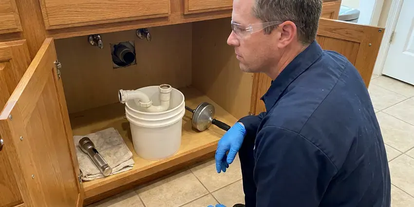

Plumbing Repair in Winter Haven, FL
Plumbing trouble in Winter Haven, FL never shows up at a good time. HDF Plumbing restores your water fast and leaves the work area clean.
- Repairs That Last
- Background-Checked Plumbers
- Workmanship Warranty
- Written Warranty on Labor
Straight answers and fast repair in Winter Haven, FL.
A slow drip costs more every week it runs, so get it looked at now.
Plumbing Repair in Winter Haven, FL Done Right the First Time
HDF Plumbing sees the same Florida plumbing problems week after week, mostly mineral scale and pipe stress from foundation movement. Newer homes across Florida mostly use PEX or CPVC with PVC drains, though copper pinhole leaks are still a frequent repair in older homes. Every repair we make in Winter Haven, FL is sized for those conditions, so a new valve or fitting does not fail the same way twice. That means brass where brass belongs.
Work we handle every week:
- Diagnose well pumps, pressure tanks and water softeners
- Sewer camera inspection with a locator to pinpoint breaks and root entry
- Thermocouple, gas valve and element swaps on water heaters

Additional Plumbing Repair Services in Winter Haven, FL
We offer expert plumbing repair services across Winter Haven, FL to fix leaks, restore flow, and keep your system running smoothly.


Customers
Why Choose HDF Plumbing for Plumbing Repair in Winter Haven, FL?
Plumbers who know Florida code and how local inspectors read it save you a second trip. HDF Plumbing gets it past the inspector on the first try. Nobody wants a re-inspection fee, and a failed inspection can hold up a home sale or a water heater swap for a week or more.
- Stocked Trucks, Valves, cartridges, heater parts and pipe are on every truck, so most repairs are done the first trip.
- Price First, You get a clear written estimate before work begins, and no add-ons later.
- Older Houses, We work on the older galvanized and cast iron piping common in Winter Haven, FL.
Citywide Coverage
Every neighborhood in Winter Haven and the towns around it is in our service area, from the older blocks near downtown to the newest cul-de-sacs. HDF Plumbing dispatches from the closest truck, so the drive stays short. Most same-day calls have a plumber on site within a few hours.
Experienced Team
Each plumber carries diagnostic gear including a camera and a locator. That gear finds hidden leaks and sewer breaks without guessing.
Safety-First Approach
Repairs follow the plumbing code your city or county has adopted, and we pull permits when a job needs one. Gas work is pressure tested. On water heaters we check the vent, the combustion air and the relief valve drain, which should end within six inches of the floor.
Trusted Certified Winter Haven Plumbing Services Professionals
At HDF Plumbing, we take pride in licensed, certified plumbing services throughout Winter Haven, FL. Those papers on the wall mean something. Our plumbers hold recognized industry credentials, and they follow strict safety and quality rules on every repair, installation and maintenance call we run.
Call Us Now PHCC Plumbing Contractor Recognition
PHCC Plumbing Contractor Recognition Better Business Bureau (BBB) Accreditation
Better Business Bureau (BBB) Accreditation Angi Certified Pro
Angi Certified Pro ISO 9001 Quality Management Certification
ISO 9001 Quality Management CertificationPlumbing Repair Work We Do in Winter Haven, FL
Gas Leak Repair in Winter Haven
Rotten-egg odor near the range or a hiss at the meter means get out of the house first. Call the gas utility from outside, then call us for the repair. Our plumbers locate the leak with an electronic detector and soap solution, then replace the failed connector, valve or section of pipe to code. No shortcuts on gas.

Tank and Tankless Water Heater Repair in Winter Haven
Tank and tankless heaters fail in different ways. HDF Plumbing repairs both, including the major brands, gas and electric. Tank calls usually come down to the thermocouple, the gas valve, an element or the anode. On a tankless unit, the culprit is often scale in the heat exchanger or a dirty inlet filter, so we flush and clean before swapping parts.
Sewer Pipe Repair in Winter Haven, FL
Clay and Orangeburg laterals crack and separate as the ground shifts, and roots find those gaps within a season or two. We camera the line and mark the depth and location of the problem on the surface. Repair options run from a traditional dig to pipe bursting or a cured-in-place liner. We camera it again before backfilling.
Well Pump Repair in Winter Haven, FL
No water at the tap on a well system points to a short list of parts. It is usually the pressure switch, the capacitor in the control box, the pump motor or a waterlogged pressure tank. We check voltage and amp draw at the control box before pulling anything out of the well. A submersible pull takes two techs and a truck.
Gas Pipe Repair in Winter Haven, FL
Leave the house first if you smell gas, and call the gas utility from outside. Once the utility clears it, we handle the repair. We pressure test the system, track the leak with an electronic detector and soap solution, and replace failed flex connectors, shutoff valves or corroded steel pipe. Nothing is relit until the test holds.
Gas Line Leak Repair in Winter Haven
Gas work is the one job no homeowner should try. A sulfur smell or a hissing fitting means leave first and call from outside. HDF Plumbing handles emergency gas leak detection and repair in Winter Haven with a combustible gas detector, then pressure tests the line to code before the meter is turned back on. Flex connectors fail most often.
Trenchless Pipe Repair in Winter Haven, FL
Pipe bursting pulls a new HDPE line through the path of the old one, and cured-in-place lining builds a new pipe inside the existing pipe. Neither one needs a trench across the driveway. Counting concrete and sod replacement, the cost often lands near an excavation. A camera decides.

Drain Repairs in Winter Haven
Slow drains that come back right after a snake usually mean the pipe itself is damaged. Cast iron that has cracked or a run that sags will hold debris no matter how often it is cleared. We run a camera to find the spot, then replace that section or hydro-jet the line if buildup is the only problem. Grease is the usual buildup.
Plumbing Repair Near Me in Winter Haven, FL
Neighbors in Winter Haven call us about a weeping water heater or a toilet that will not stop running more than anything else. We fix those in homes across Florida every week. Fill valves and heater parts are already on board.
Local matters with plumbing repair in Winter Haven, FL because the plumber who knows the area knows the pipe. HDF Plumbing serves your neighborhood directly, with no call center between you and the plumber. Wait times stay short. The dispatcher knows the streets, the plumber knows the houses, and the truck shows up with your work order printed.
HDF Plumbing at a Glance
- Fully licensed plumbing team covering Winter Haven, FL
- 24/7 emergency service with same-day scheduling
- Upfront, flat-rate pricing before work begins
- 4.9-star rated by 739+ Florida customers
Winter Haven Map
Winter Haven Information
- Population
- 57,109
- Area codes
- 863/407/352
- Service area
- Winter Haven and communities within 40 miles
- Nearby
- Lakeland, Poinciana, Four Corners, Kissimmee
Around Winter Haven, flushing the water heater yearly and descaling tankless units helps keep mineral buildup under control. In Winter Haven, FL that shows up as scale on fixtures, pinholes in copper and the occasional slab line failure. Fixing it promptly keeps water out of walls and floors.
Talk to a Plumber
Reach out to HDF Plumbing for honest, reliable plumbing from people who know the trade in Winter Haven, FL.
Our Specialized Plumbing Services in Winter Haven, FL
At HDF Plumbing, we handle the full list of plumbing services across Winter Haven, FL. From leak detection to full system installs, our team works fast and charges fair prices on homes and commercial properties alike. Here are the core services we offer:


Our Plumbing Repair Process in Winter Haven, FL
HDF Plumbing follows the same basic steps on every repair in Winter Haven, FL.
Tell Us the Problem
Call (904) 925-7356 and tell us what is leaking, clogged or not working. We can often come the same afternoon.
Diagnose and Quote
Your plumber looks over the system, finds the cause and explains the options. You approve a flat price first.
Repair and Test
We make the repair, then test for leaks, flow and proper operation. The area is cleaned and the warranty explained before we go.
Frequently Asked Questions About Plumbing Repair in Winter Haven
Simple repairs such as a faucet cartridge, toilet fill valve or angle stop usually run $150 to $400. Replacing a water heater part is typically $200 to $600. Slab leak and sewer repairs can range from $1,500 to $6,000 or more, depending on access and the repair method we use. Firm price first.
Most morning calls are handled the same day. Active leaks, sewer backups and no-water calls get emergency service around the clock.
Watch the water meter with every fixture off. A spinning leak indicator means water is escaping somewhere. Warm floor tiles, the sound of water running at night and damp baseboards are the other common clues. Mold can start within a few days.
That depends on the part and the condition of the pipe around it. HDF Plumbing installs commercial-grade parts and backs the work with a warranty.
Fast. HDF Plumbing runs emergency repair in Winter Haven around the clock, usually putting a plumber at the door within a few hours on urgent calls.
Sometimes, for a plunger job or a new showerhead. For most repairs, though, one wrong turn of a wrench can turn a drip into a flood.
Age and water pressure cause most of them. The rest usually trace to corrosion from the water or soil, or to a foundation that moves and pulls on the pipe. Limestone bedrock and sinkhole activity in some areas can shift the ground and crack buried water and sewer lines. Over time, that movement cracks buried pipe at its weakest fittings.
Grease in the trash, not the sink, prevents more clogs than any product. Check under sinks and behind the toilet a few times a year for drips. Flush the water heater once a year, and consider a softener if you see scale on fixtures, because hard water shortens the life of nearly everything with a valve in it. Insulate exposed pipes before a freeze.
What People Are Saying About Our Plumbing Experts?

Mark T.
The floor drain in our office break room backed up every few weeks. The plumber ran a cable, then put a camera down and found roots at a joint about thirty feet out. Seeing it on the screen made the decision easy.
Drain Cleaning · St. Cloud, FLBrian W.
I smelled gas behind the dryer and called right away. The plumber found a corroded flex connector, replaced it, and pressure tested the whole line before turning the gas back on. He let me watch the gauge hold steady for fifteen minutes.
Gas Line Repair · Poinciana, FL
Diane F.
My kitchen faucet had dripped for months and I finally got tired of hearing it at night. HDF Plumbing came out the next morning, replaced the cartridge and the O rings, and tightened a loose base that was letting water under the sink.
Faucet Repair · Lakeland, FL
Laura S.
Our 40 gallon tank started leaking from the bottom after thirteen years. The tech hauled the old one out, set a new unit with a fresh expansion tank, and had hot water running in about four hours. He took the old tank with him too.
Water Heater Replacement · St. Cloud, FL
Marcus H.
Grease from the fryer line kept clogging the kitchen drain at my diner. HDF Plumbing hydro jetted the line after closing, showed me the buildup on camera, and set us up on a quarterly cleaning so it does not catch us on a Friday again.
Drain Cleaning · Poinciana, FLKaren W.
After our third pinhole leak in copper, we stopped patching. HDF Plumbing gave us a written plan room by room and repiped the house in PEX while we stayed in it. The crew covered our floors every morning and cleaned up every night.
Repiping · Kissimmee, FL